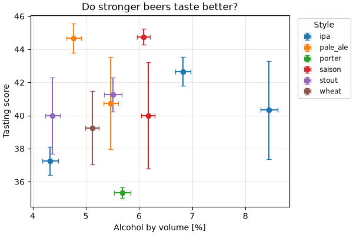
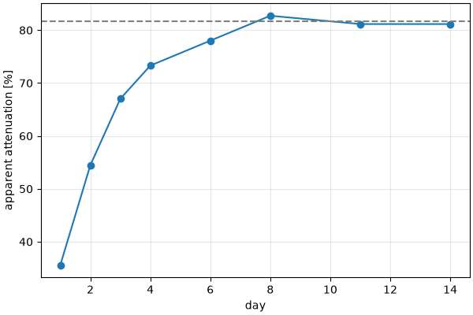

Step 6 · Figures¶
In this step you draw the brews with matplotlib: a figure from axes you give on
the command line, figures declared by name in .samplekitrc, and one the
model draws itself. A figure opens in a window, or is written to a file with
-o and --write.
Run every command from this folder, 06-figures.
Try it¶
$ samplekit list figures brews
$ samplekit plot score brews # a window
$ samplekit plot score brews -o score.pdf # a preview: what it would write
$ samplekit plot score brews -o score.pdf --write # written
$ samplekit plot -x og -y abv --group style brews -o og-abv.png --write
$ samplekit plot alcohol_by_style brews --query strong -o strong.png --write
$ samplekit plot attenuation_curve brews/citra-ipa.md -o curve.png --write
$ samplekit explain score.pdf
What you see¶
Axes on the command line. -x and -y name two numbers each brew holds:
a property, one part of it (abv.u), or a table cell. One point per brew,
with error bars where a value has an uncertainty. --group draws one series
per value of a field, and --kind chooses scatter, line, step, bar or
box. Two columns of one table, -x fermentation.day -y fermentation.gravity, draw a curve per brew.
A brew without the value is left out, and said:
warning: 1 of 12 samples not drawn: no abv — the smoked porter, still
fermenting.
Declared figures. A figure you draw often is declared, like a query:
[figure.score]
kind = "scatter"
x = "abv"
y = "score"
group = "style"
title = "Do stronger beers taste better?"
legend = "outside"

Drawing a declared figure runs no code from the project: it never starts the model.
The model's figure. For anything more — a fitted line, a reference line, several panels — the model draws it, on axes SampleKit gives it:
@sk.figure
def attenuation_curve(self, ax):
"""How much of the sugar was eaten, day by day, against where it ended."""
ax.plot(self.fermentation.values("day"), self.fermentation.values("apparent"), "o-")
if self.attenuation.value is not None:
ax.axhline(self.attenuation.value, color="0.5", linestyle="--")
ax.set_xlabel("day")
ax.set_ylabel("apparent attenuation [%]")

Labels and styles¶
An axis is labelled with the quantity's symbol and its unit, taken from a
style. This step's .samplekitrc declares a style for figures, where each
quantity has a symbol_figure and each unit a figure spelling, in
matplotlib's mathtext between $…$:
[render]
figure_style = "figure"
[unit."kg"]
math = '\mathrm{kg}' # for LaTeX: samplekit brews --style math
figure = '$\mathrm{kg}$' # for figures
[property.abv]
symbol_figure = 'Alcohol by volume'
The math spellings are for a table put into a LaTeX report:
$ samplekit brews --profile alcohol --style math
[matplotlib] holds matplotlib's own settings, by their names, for every
figure the project draws; sizes are in centimetres.
A file remembers where it came from¶
A figure written with --write is recorded in the project's history, so that
explain finds it again, even copied elsewhere, and says whether what it was
drawn from has changed since:
score.pdf
made 2026-09-27 17:27, by samplekit plot score brews -o score.pdf --write
written score.pdf
from snapshot #1, 12 samples
nothing it was made from has changed since: it is up to date
made again as it was, from the project's folder: samplekit plot score brews -o score.pdf --write --at dacba2b
--at draws the figure again from the project as it was then.
Why¶
A figure in a paper should be made from the data by a command, so that it can be made again, and so that you know when the data under it has changed.
To understand: the history, and how a file is found again.
To look up:
plotand its options, figures, styles and[matplotlib]in.samplekitrc,@sk.figure.To do: figures and tables for a paper.
Next: Step 7 · Two brewers, two projects and the TUI.